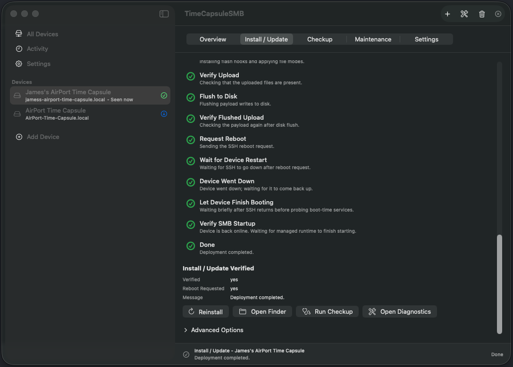
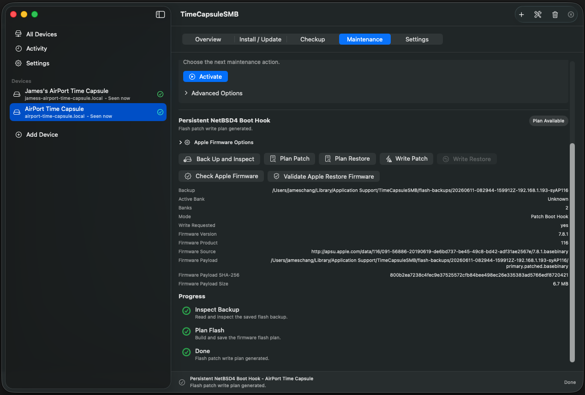
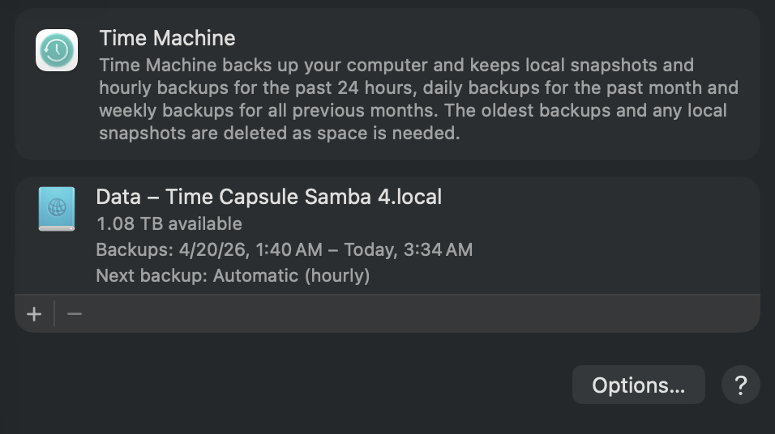

Keep backing up to your Time Capsule.
Apple removed AFP support in macOS 27, which is the protocol AirPort Time Capsules use for Time Machine. TimeCapsuleSMB will directly install Samba on the Time Capsule, so it stays compatible with macOS.
Download for MacFree and open source. Needs macOS 14 or later on an Intel or Apple silicon Mac
Use the command line instead. Supports Linux and older macOS
Features of TimeCapsuleSMB
The Time Capsule runs Samba 4.25 and speaks SMB 3, the file sharing protocol current Macs use. Nothing keeps running on your Mac.
- Your existing backups keep working
- The disk is not wiped or reformatted. Time Machine picks up the backups already on it.
- It finds itself on the network
- The Time Capsule appears in Finder's Network list and in Time Machine settings, even if its IP address changes.
- Sign in with the device password
- Any user name works. The password is the Time Capsule's own password from AirPort Utility. Guest access is off.
- You only set it up once
- The server starts each time the Time Capsule restarts. On 1st to 4th generation models this needs the one-time boot hook described below.
How to Install
Expect 10 to 20 minutes, most of it waiting for the Time Capsule to restart and start Samba.
Download and open the app
Unzip TimeCapsuleSMB.app.zip and open the app. When macOS asks, allow it to find devices on your local network. If you missed the prompt, turn it on in System Settings, Privacy & Security, Local Network, then quit and reopen the app.
Add your Time Capsule
Click Add Device, choose your Time Capsule and enter its password. The app turns on SSH on the device, which it needs for the install.
Install Samba
Select the device, open the Install / Update tab and click Install / Update Samba. The app copies the server to the Time Capsule, restarts it and checks that file sharing came back up.

A finished install. Run Checkup confirms everything is working. 1st to 4th generation only: install the boot hook
Older Time Capsules need a small firmware patch to start Samba by themselves after a restart. On the Maintenance tab, under Persistent NetBSD4 Boot Hook, click Back Up and Inspect, then Plan Patch, then Write Patch. Keep the Time Capsule plugged in while it writes: losing power in the middle can leave it unable to start.
If you skip the patch, click Activate on the Maintenance tab after every restart instead.

The boot hook section after Plan Patch. Point Time Machine at it
In System Settings, open Time Machine, remove the old Time Capsule destination and add the new one. Removing the destination does not delete any backups from the disk.

Time Machine backing up to the Time Capsule over SMB.
Which devices work
| Device | After a restart |
|---|---|
| Time Capsule, 5th generation (2013, the tall one) | Samba starts by itself. |
| Time Capsule, 1st to 4th generation (2008 to 2011, the flat ones) | Samba starts by itself once the boot hook is installed. Without it, click Activate after every restart. |
| AirPort Extreme with a hard disk | Works, but not officially supported and less tested. The server is stored on the disk, so a model without one cannot run it. |
Before you start
- Turn off VPN and firewall software on your Mac. It can block the app from reaching the Time Capsule.
- If your Mac connects straight to the Time Capsule, use an Ethernet cable. A direct Wi-Fi connection drops every time the Time Capsule restarts.
Install from the command line
On Linux, or if you prefer a terminal, use the Python tool. It needs Python 3.9 or later.
git clone https://github.com/jamesyc/TimeCapsuleSMB.git
cd TimeCapsuleSMB
./tcapsule bootstrap
.venv/bin/tcapsule configure
.venv/bin/tcapsule deploy
.venv/bin/tcapsule doctorconfigure finds the Time Capsule and saves its settings, deploy installs Samba and doctor checks the result. The README covers every command, including the boot hook and uninstalling.
Help and more
- FAQ for common problems, such as the disk showing as full or not appearing in Finder.
- Report a problem if the FAQ does not solve it.
- How it works for the full technical story.
- Buy me a coffee if TimeCapsuleSMB saved your backups.